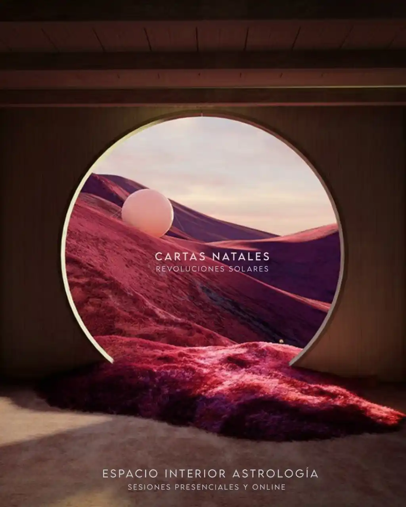

Consultas
Un espacio para mirarte en el espejo del cielo.

¿Qué es una carta Natal?
La carta Natal es un mapa del cielo en el momento en el que nacemos. Es una fotografía de cómo estaban los planetas y las estrellas en ese preciso instante. Mirando ese mapa, podemos entender las energías disponibles para nosotros, nuestras fortalezas, desafíos y propósitos de vida.
Somos el eco de ese momento en el que nacemos. La carta natal nos permite reconocer ese patrón energético, aceptarlo y transformarlo. Es una herramienta poderosa para el autoconocimiento y la evolución personal.
¿Qué sucede en una consulta astrológica?
En una consulta astrológica hay una gran búsqueda: acompañar los procesos de quien consulta. La astrología nos brinda un lenguaje simbólico que nos permite comprender lo que nos sucede. Es una guía para reconocer patrones, entender nuestro potencial y transitar desafíos con mayor conciencia.
Exploramos juntos tu carta natal, tus inquietudes y los temas que te resuenan. La idea es que te lleves claridad y herramientas para navegar tu camino. Es un espacio de escucha activa y reflexión profunda, donde la astrología se convierte en un puente hacia tu interior.
Las consultas duran entre una hora y media y dos horas, e incluyen el registro de un audio y una imagen digital de tu carta.
¿Qué ofrecemos?
- Cartas Natales: un espacio para aproximarnos a tu esencia.
- Revoluciones Solares: Análisis de tu año personal, desde un cumpleaños al siguiente.
- Sinastrías: Estudio de la compatibilidad y dinámica entre dos cartas natales (parejas, amistades, socios).
- Espacios terapéuticos regulares: Seguimiento y acompañamiento continuo a través de la Escucha Astrológica.
El tiempo de espera aproximado para una sesión es de entre una y dos semanas. El valor de las sesiones es de 135.000$ por Mercado Pago, 120.000$ por transferencia o 90 dólares desde el exterior.